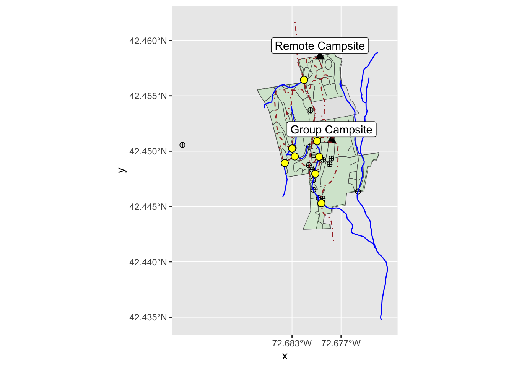

#load packages
library(pacman)
p_load(tidygeocoder, leaflet, tidyverse, mdsr, sf, ggspatial, macleish, readr)Stat. 651 Homework 3
Problems:
Make the plot from MDSR Chapter 14 Exercise Problem 6 in Tableau
MDSR Chapter 17 Exercises Problem 1
MDSR Chapter 18 Exercises Problem 1, Problem 2
See RPubs for answers to leaflet questions
17.1 Use the geocode function from the tidygeocoder package to find the latitude and longitude of the Emily Dickinson Museum in Amherst, Massachusetts.
emily_dickenson <- tibble(
address = "280 Main St, Amherst, MA 01002"
) %>%
tidygeocoder::geocode(address, method = "osm")
emily_dickenson <- emily_dickenson %>%
mutate(
title = "Emily Dickenson Museum",
street_address = "280 Main St, Amherst, MA 01002"
)
emily_dickenson_map <- leaflet() %>%
addTiles() %>%
addMarkers(data = emily_dickenson)
emily_dickenson_map %>%
addPopups(
data = emily_dickenson,
popup = ~paste0("<b>", title, "</b></br>", street_address)
)18.1 Problem 1 (Medium): The Violations data frame in the mdsr package contains information on violations noted in Board of Health inspections of New York City restaurants. These data contain spatial information in the form of addresses and zip codes.
a. Use the geocode function in tidygeocoder to obtain spatial coordinates for these restaurants.
#coordinates Provided by Prof. Suess
Violations_loc <- read_csv("Violations_loc.csv")
Violations_loc %>%
select(dba, boro, street, zipcode, lon, lat)# A tibble: 480,621 × 6
dba boro street zipcode lon lat
<chr> <chr> <chr> <dbl> <dbl> <dbl>
1 MORRIS PARK BAKE SHOP BRONX MORRIS PARK AVE 10462 -73.9 40.8
2 MORRIS PARK BAKE SHOP BRONX MORRIS PARK AVE 10462 -73.9 40.8
3 MORRIS PARK BAKE SHOP BRONX MORRIS PARK AVE 10462 -73.9 40.8
4 MORRIS PARK BAKE SHOP BRONX MORRIS PARK AVE 10462 -73.9 40.8
5 MORRIS PARK BAKE SHOP BRONX MORRIS PARK AVE 10462 -73.9 40.8
6 MORRIS PARK BAKE SHOP BRONX MORRIS PARK AVE 10462 -73.9 40.8
7 MORRIS PARK BAKE SHOP BRONX MORRIS PARK AVE 10462 -73.9 40.8
8 MORRIS PARK BAKE SHOP BRONX MORRIS PARK AVE 10462 -73.9 40.8
9 MORRIS PARK BAKE SHOP BRONX MORRIS PARK AVE 10462 -73.9 40.8
10 MORRIS PARK BAKE SHOP BRONX MORRIS PARK AVE 10462 -73.9 40.8
# … with 480,611 more rowsb. Using the spatial coordinates you obtained in the previous exercise, create an informative static map using ggspatial that illustrates the nature and extent of restaurant violations in New York City.
c. Using the spatial coordinates you obtained in the previous exercises, create an informative interactive map using leaflet that illustrates the nature and extent of restaurant violations in New York City.
18.2 Problem 2 (Medium):
a. Use the spatial data in the macleish package and ggspatial to make an informative static map of the MacLeish Field Station property.
library(sf)
library(macleish)
#boundaries
boundary <- macleish_layers %>%
pluck("boundary")
#forests
forests <- macleish_layers %>%
pluck("forests")
#campsites
camp_sites <- macleish_layers %>%
pluck("camp_sites")
#landmarks
landmarks <- macleish_layers %>%
pluck("landmarks")
#trails
trails <- macleish_layers %>%
pluck("trails")
#streams
streams <- macleish_layers %>%
pluck("streams")
#bridges
bridges <- st_intersection(trails, streams) %>%
st_cast("MULTIPOINT") %>%
st_cast("POINT")
boundary_plot <- ggplot(boundary) +
geom_sf() +
scale_x_continuous(breaks = c(-72.677, -72.683))
boundary_plot +
geom_sf(data = forests, fill = "green", alpha = 0.1) +
geom_sf(data = camp_sites, shape= 17, size = 3) +
geom_sf(data = landmarks, color = "black", shape=10, size = 2) +
geom_sf(data = trails, color = "brown", size = 1.5, linetype = "dotdash") +
geom_sf(data = streams, color = "blue", size = 1.5) +
geom_sf(data = bridges, pch = 21, fill = "yellow", size = 3) +
geom_sf_label(
data = camp_sites, aes(label = name),
nudge_y = 0.001) 
In this plot, we see an informative statistic plot of the MacLeish Field Station. The black triangles are the campsites, the black circles with x’s are landmarks and the circles filled in with yellow are bridges. The blue lines are rivers and the brown dashed lines are trails.
b. Use the spatial data in the macleish package and leaflet to make an informative interactive map of the MacLeish Field Station property.
MacLeish_map <- leaflet() %>%
addTiles() %>%
addPolygons(
data = forests,
weight = 1, fillOpacity = 0.1, color = "green"
) %>%
addMarkers(data = camp_sites) %>%
addPopups(
data = camp_sites,
popup = ~paste0(name)
) %>%
addPolylines(
data = st_intersection(boundary,streams),
weight = 2, color = "blue", opacity = 0.2,
group = "Structures"
) %>%
addCircles(data=bridges,
color="yellow", label="Bridge",
radius = 7) %>%
addCircleMarkers(data = landmarks,
color="black",
radius = 0.2,
popup = ~paste0(Label))
MacLeish_map